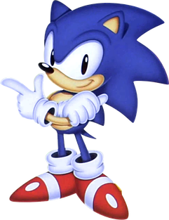
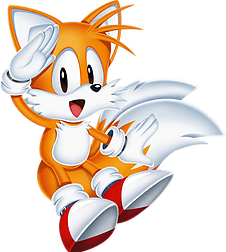
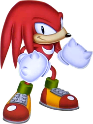
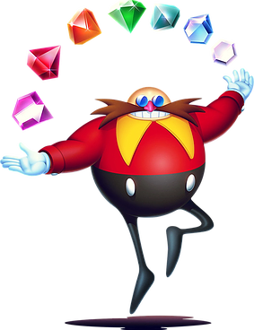

Heroes and Villains
Sonic The Hedgehog
All spikes and speed, Sonic the Hedgehog is the fastest hedgehog in the world-
big on attitude and with a big heart to match.
Like the wind, he's always on the move, living a life of excitement and adventure.
Miles "Tails" Prower
A talented young fox cub, Tails can fly by spinning his two tails like heli-copter rotors.
A gentle soul bullied in his past for having two tails,
Tails became more confident about himself after meeting Sonic and seeing him run like the wind.
Tails looks up to Sonic and has been with him ever since.
Knuckles The Echidna
Knuckles is a heroic and powerful echidna who lives on Angel Island, an island in the sky.
He guards the island's giant Master Emerald.
He's Sonic's rival and friend who can be snarky and witty with his traps
but he tends to be quick to trust others, which makes him sometimes very gullible.
In this game, he has his own story, seperate from the others.
Dr. Ivo "Eggman" Robotnik
Sonic, Tails and Knuckles's main enemy.
Not much is known about this man, other than that he is a scientist,
And he wishes to take over the planet and build his Eggman empire.
He makes his inventions from his base on South Island,
where he powers his robots with small animals known as Flickies,
which are the animals Sonic and his friends save.
